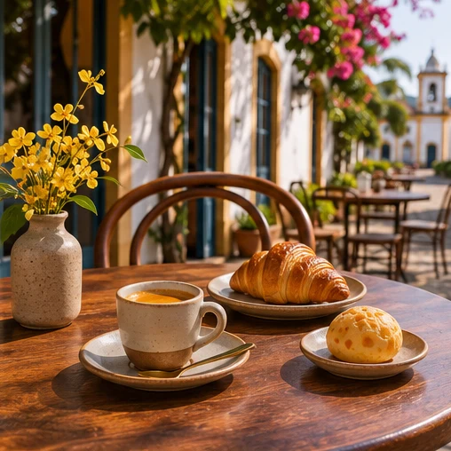

R$ 8
Espresso da casa
Encorpado, com notas de cacau.
Cafeteria
Espresso, coados e pães de fermentação natural para uma manhã sem pressa.
Ver cardápio
R$ 8
Encorpado, com notas de cacau.
R$ 12
Grãos brasileiros selecionados para o preparo no filtro.
R$ 14
Fermentação natural, manteiga e uma casquinha crocante.